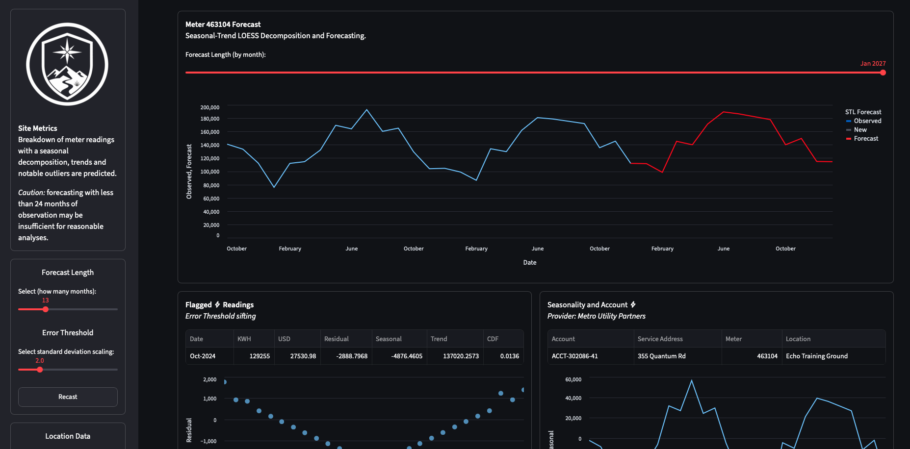

Data App
Interactive Utility Review
The dashboard lets a user switch between installation-level metrics and meter-specific views, with synthetic accounts, service locations, and monthly readings.
Project Detail
Energy Signal is a Streamlit dashboard built around synthetic monthly utility billing data. It explores energy usage, cost trends, seasonal decomposition, forecasting, and flagged readings in a facility-planning context.
Launch the live Streamlit dashboard · View the GitHub repository

Data App
The dashboard lets a user switch between installation-level metrics and meter-specific views, with synthetic accounts, service locations, and monthly readings.
Forecasting
The app uses Seasonal-Trend decomposition using Locally Estimated Scatterplot Smoothing (LOESS) and forecasting tools to separate observed usage, seasonal behavior, residuals, and trend.
Quality Control
Synthetic operational spikes and data-entry errors create realistic examples for outlier review, threshold tuning, and data-quality discussion.
Utility data is often messy, delayed, and operationally contextual. This project turns synthetic facility billing data into an interactive decision-support tool that can help explain trends, flag unusual readings, and communicate energy behavior to non-technical stakeholders.